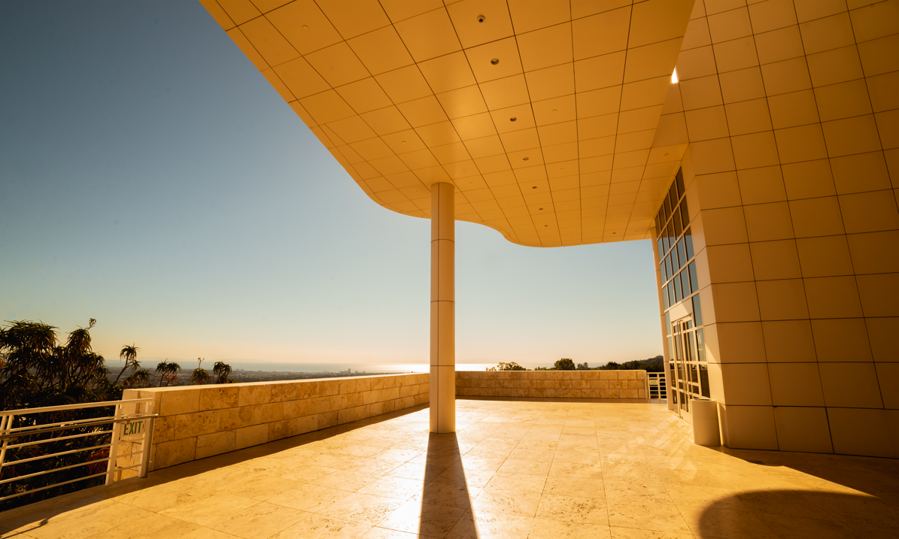
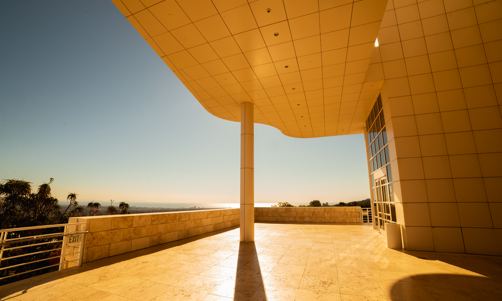

Who Am I?
My name is Widmaer Fleuransaint and I am pursing a master degree from Boston University Metropolitan college. When I am not studying, I am either taking pictures, playing my guitar or drawing. I currently live and work in Massachusetts as a customer service representative while I obtain my degree. This site will explore the main parts of my life, photography, music and drawing. I have always loved music, since I was young, I participated in any musical assemble that would have me. All throughout high school I was either second chair or first chair in my local jazz band and orchestra. I use to play the trombone but have since picked up the guitar. I am not that good but when I practice I play like I am auditioning for the Boston philharmonic, or at least I try too. In any case, this blog entry is just a short introduction into what I love to do when I am not working or programming.


 
